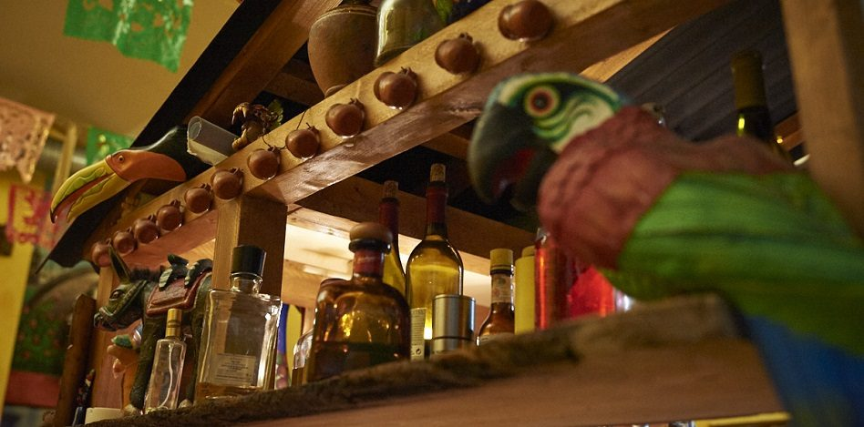

Antojitos
Leopoldsgasse 31 — hier gibt es auch mittags Antojitos: von Montag bis Samstag durchgehend zwei Servicezeiten.
Kontakt & Öffnungszeiten
- AdresseLeopoldsgasse 31, 1020 Wien
- Telefon+43 1 212 25 61
- E-Mailtaqueria@losmexikas.at
- ReservierungTelefonisch — in dieser Vorschau zusätzlich online
- Küchebis 22:30 Uhr
Öffnungszeiten
- Montag bis Samstag11:00 – 15:00 Uhr
- Montag bis Samstag18:00 – 23:00 Uhr
- Sonntaggeschlossen
Diese Zeiten sind auf Start- und Kontaktseite der bestehenden Website übereinstimmend angegeben.
Schematische Lageskizze, keine maßstabsgetreue Karte. Für die Navigation bitte den Routenlink verwenden.
Antojitos — die kleinen Gelüste
„Antojitos“ heißen in Mexiko jene Kleinigkeiten, auf die man Lust hat: Tacos, Gringas, Huaraches, Enchiladas, Tacos dorados. Im Haus in der Leopoldsgasse gibt es sie auch zu Mittag.
Huaraches
Gegrillter Maisteig mit grüner Sauce, Sauerrahm, Avocadocreme und Schafskäse — mit Longaniza, Pollo, Bistec oder vegetarisch mit Kaktustrieben.
ab € 12,50
Enchiladas
Verdes mit grüner Sauce, rojas mit Tomaten-Chili-Sauce oder de mole mit Erdnuss-Kakao-Sauce — dazu Salat, Tomaten, Schafskäse, Zwiebeln und Sauerrahm.
€ 12,80
Consomé de barbacoa
Die Lammsuppe des Hauses — Spezialität und bestes Mittagessen an kalten Tagen.
€ 8,00
Die Karte des Antojitos entspricht jener der Taquería; die Tacos al pastor bleiben eine Spezialität der Taquería an Freitagen und Samstagen. Zur vollständigen Carta →



Mesa lista — Tisch reservieren
Taquería 1080: +43 1 406 08 71 · Antojitos 1020: +43 1 212 25 61